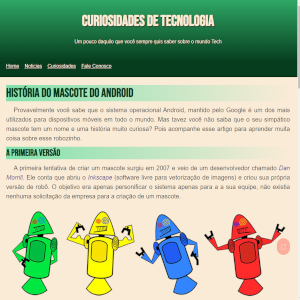

Desenvolvedor fullstack mergulhado no mundo da programação e amante de tecnologia.
Sobre mim
A partir daqui podem me chamar de Leon! sou casado tenho 1 filho, sou um homem de familia e prioriza o ambiente familiar com foco nas pessoas do
meu convívio pessoal.
Eu Gosto de viagens e passeios com familiares e amigos, gosto de compartilhar conquistas e emoções que dão significado a vida.
Encaro os desafios com otimismo mantendo uma rotina equilibrada entre responsabilidade, trabalho e lazer.
Venho do varejo onde atuel por 15 anos e nessa epoca passei no meu primeiro vestibular para UfsCar par ao curso de Basharel em Sistemas de Informação.
Por questões diversas o meu sonho precisou ser adiado mas a paixao por tecnologia e como eles eram aplicadas, e o impacto que eles causam nos processos permanecerem .
Depois de muitos anos e de ter uma experiencia consolidade decidir investir em uma nova carreira como programado desenvolvedor. Encontrei em Analise e Desenvolvimento de Sistemas
a grade de estudo ideal para ser um Desenvolvedor.
Projetos

AndroidOS
Site contando a historia do mascote do sistema operaaacional Android.